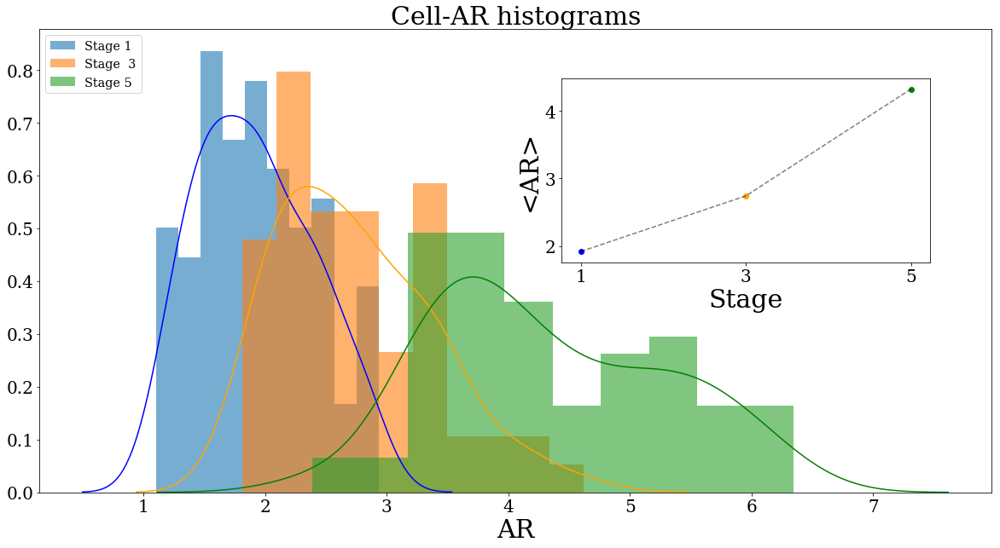
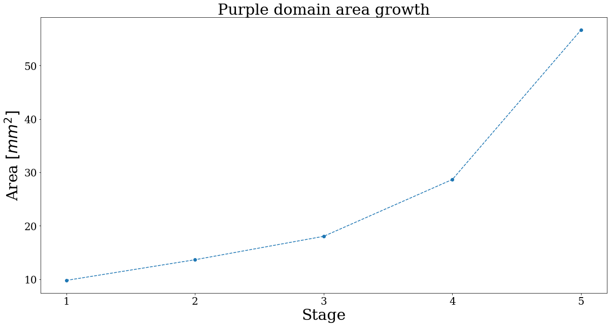
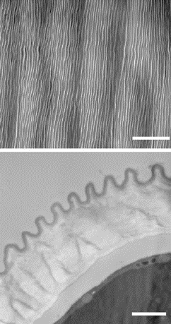
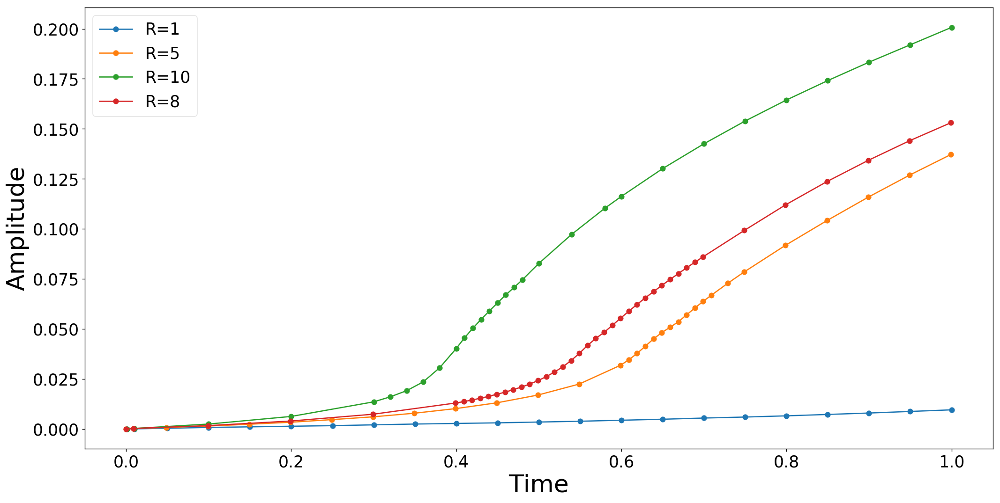
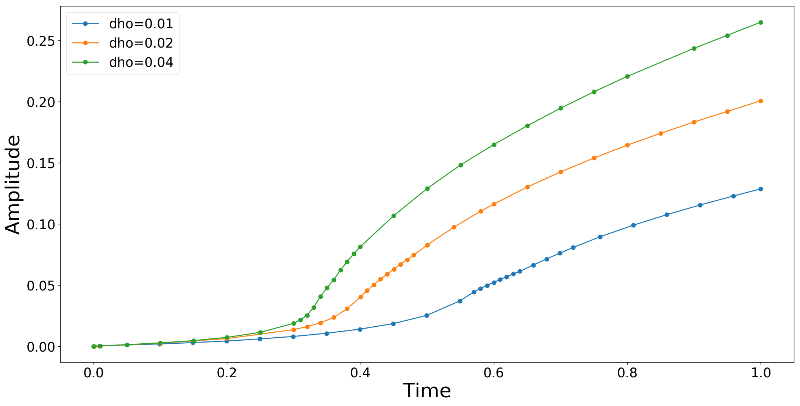

HIBISCUS PROJECT
Ridge formation and cuticle mechanics
during development
3/10/2019
Lab-Meeting

Carlos A Lugo
How the system looks

How the system looks

How the system looks

Periodic ridges:
$\begin{array}{|c|c|} \hline \lambda & 1.28 \, (0.18) \, \mu m \\ \hline \lambda_B & 1.23 \, (0.2) \, \mu m \\ \hline \lambda_T & 1.35 \, (0.11) \, \mu m \\ \hline A & 1.15 \, (0.09) \, \mu m \\ \hline h & 0.25 \, (0.01) \, \mu m \\ \hline \end{array}$
Stretches:
$\begin{array}{|c|c|c|c|} \hline & L_1 \, [\mu m] & L_2 \, [\mu m] & \frac{L_2}{L_1} \\ \hline Width & 16.36 & 19.40 & 1.18 \\ \hline Length & 43.62 & 83.37 & 1.91 \\ \hline \hline \end{array}$
Arc-length and thickness ratios:
Also early estimations of the arc-length give:
$$\frac{S_f}{S_s}\simeq 1.2$$
And:
$$\frac{h}{L_y}\simeq 0.07$$
How the system evolves

How the system evolves
How the system evolves

How the system evolves

How the system evolves
How the system evolves

Conundrum

Questions
What determines the appearance/lack of ordered ridges in the cuticle?
Mechanics?, Chemistry?, Genetics?
Can we develop a developmental theory?
Questions
What determines the appearance/lack of ordered ridges in the cuticle?
Mechanics?, Chemistry?, Genetics?
Can we develop a developmental theory?
Mechanics of continuum media
Modeling Soft Matter I - Particles and Hooke's Law


Parameters and Variables:
Mass $m$, spring constant $k$
Displacement: $y=x-x_0$, Momentum=$m\frac{dy}{dt}$
Modeling Soft Matter II - Continuum Media and Stress

Parameters and Variables:
Density $M=\int \rho dV $, Material parameters
Displacement and velocity field.

Kinematics:
Reference coordinates and spatial coordinates.
Modeling Soft Matter III - Dynamics
Balance of linear and angular momentum:
$\rho\frac{\partial ^2 \mathbf{u}}{\partial t^2}=\rho \mathbf{b}+\mathbf{\nabla}\cdot{\mathbf{\sigma}}$
$\mathbf{\sigma}=\mathbf{\sigma}^T$.
This describes any continuous media for which a displacement and a stress tensor can be defined.
The distinction between solid, fluid or other continuum comes with the emprirical constitutive relation between $\mathbf{\sigma}$ and $\mathbf{u}$.
Hyperelasticity and biological materials.
Hyperelasticity postulates the existence of a Helmholtz free-energy density function $W$ defined per unit reference volume.
Stress is then obtained by taking the derivative of $W$.
Example: Neo-Hookean materials.
Deformation gradient: $\mathbb{F}=\mathbb{I}+\mathbf{\nabla u}$
Right Cauchy-Green deformation tensor: $\mathbb{C}=\mathbb{F}^T \mathbb{F}$
Invariants: $J=\det(\mathbb{F})$ and $I_1=tr{\mathbb{C}}$.
Incompressible
$W=\frac{\mu}{3}(I_1-3)$
Compressible
$W=\frac{\mu}{2}(I_1-3-2\ln(J))+\frac{1}{2}\ln^2(J)$
Lamé Constants:
$\mu=\frac{E}{2(1+\nu)}$
$\lambda=\frac{\nu E}{(1+\nu)(1-2\nu)}$
Where $E$ and $\nu$ represent the Young modulus and the Poisson ratio respectively.
Example: Neo-Hookean materials

Growth and Buckling.
Elements of every model.
1.- Thin sheet with bending stiffness $\mu_s$.
2.- Elastic foundation of stiffness $\mu_f$.
3.- Imposed compressive strain.
The bending resistance penalizes short wavelengths, the foundation penalizes long wavelengths which in combination lead to new intermediate scales.
Recap-Morphoelastic Decomposition.
Deformation gradient: $\mathbb{F}=\mathbb{F}_e\mathbb{F}_g=\mathbf{\nabla}\varphi$.
$\mathbb{C}=\mathbb{F}^T\mathbb{F}$, $\mathbb{F}_{e,l}$ and $\mathbb{C}_{e,l}=\mathbb{F}_{e,l}^T\mathbb{F}_{e,l}.$
$W_{e,l}=\frac{\mu}{2}(I_1-3-2\ln(J_{e,l}))+\frac{1}{2}\ln^2(J_{e,l})$.
$\mathbb{P}=\frac{{\partial W}}{\partial{\mathbb{F}}}=\mathbb{P_e}\mathbb{F_g}^{-T}$
Then, we solve: $\nabla\cdot\mathbb{P}=0$
We need to specify the growth tensors. $l$ represents the film and substrate.
Growth Tensors-Quasistatic Model.
Growth Models.
Deformation gradient: $\mathbb{F_g}=\theta_l(t)\mathbb{I}$.
Where $\theta_l(t)$ follows the rule $\dot{\theta_l}=\lambda(t)\theta_l$ or $\theta_l(t)=\theta_{0,l}e^{\int_0^{t}\lambda(t)}$
Parameters.
We use the control parameters $R$ and $h_o$ where:
$R=\frac{E_f}{E_s}$ and $h_o$ is the initial thickness of the cuticle.
Typical Dynamics.
Boundary Conditions.
Results $R$.
Results $h_o$.
To-do.
Full 3-D Geometries.
Quantitative Fitting.
Put a lot of papers out.
Current Model Revisited (Flat Cells)
The cuticule is a layer characterised by uniform principal stretches $\lambda_k$ ($k=1,2,3$). $\lambda_1$ and $\lambda_2$ in the plane of the cuticle.
The cuticule is assumed to be incompressible (i.e $\lambda_3=\frac{1}{(\lambda_1 \lambda_2)^2}$) and a Neo-Hookean constitutive law.
$$\begin{eqnarray*} \sigma_{11} &=& \mu \lambda_1^2 - p \\ \sigma_{22} &=& \mu \lambda_2^2 - p\\ \sigma_{33} &=& \frac{\mu}{\lambda_1^2\lambda_2^2}-p\\ \end{eqnarray*}$$$p$ an arbitrary pressure and $\mu$ the shear modulus. ($\nabla \cdot \sigma = 0$). An additional stress $\mu \Pi$ acts on the upper and lower faces of the cuticule via a boundary condition $\sigma_{33}=-\mu \Pi$, which implies: $$p=\frac{\mu}{\lambda_1^2 \lambda_2^2}+\mu \Pi$$
Current Model Revisited (Flat Cells) II
If $\Pi>0$ the growth induced compressive stress (normal to the cell wall) adds to the pressure in the cuticule, the model postulates: $$\Pi=\beta \left ( \lambda_1\lambda_2 - \frac{1}{\lambda_1^2 \lambda_2^2} \right)$$ Which for isotropic expansion and $\beta=1$ corresponds to a stress free expansion. Thus: $\beta>1$ is overproduction and $\beta<1$ underproduction of cuticule.
The final form of the stresses is: $$\begin{eqnarray*} \frac{\sigma_{11}}{\mu} &=& \lambda_1 \left ( \lambda_1 - \beta \lambda_2 \right)+ \frac{\beta-1}{\lambda_1^2\lambda_2^2}\\ \frac{\sigma_{22}}{\mu} &=& \lambda_2 \left ( \lambda_2 - \beta \lambda_1 \right)+ \frac{\beta-1}{\lambda_1^2\lambda_2^2} \end{eqnarray*}$$
Current Model Revisited (Flat Cells) III
Region I: $\sigma_{11}>0$, $\sigma_{22}>0$: Tensile regime in both directions, which implies a smooth cuticle.
Region II: $\sigma_{11}>0$, $\sigma_{22}<0$: Tension in direction 1 and compression in direction 2, this might lead to buckling for enough compressive stresses aligned in the 1 direction.
Region III: $\sigma_{11}<0$, $\sigma_{22}>0$: Tension in direction 2 and compression in the ortogonal co-planar directions which might cause ridge formation in direction 1.
Region IV: $\sigma_{11}<0$, $\sigma_{22}<0$: Compressive regime on both directions this might induce a disordered state in the ridge patterning for large enough stresses.
Stress free conditions: The cuticle has no stress iff there is no growth ($\lambda_k=1$) or $\beta=1$ and the growth is isotropic ($\lambda_1=\lambda_2$).
The role of $\beta$
The role of $\beta$ varies depending if it is smaller or larger than one.
For $\beta=1$ the smooth region predominates unless the stretches are very different and there is growth ($\lambda_k >=1$)
For $\beta>1$, the buckling regimes are promoted as long as the stretches are different.
The case $\beta=1$ always gives ridges in the direction of larger elongation.
The role of $\beta$

The role of $\beta$

The role of $\beta$

The role of $\beta$

Growth and remodelling?

Perturbation theory allows to obtain dynamics whose solution is effectively a ridged solution to teh first order! However it does not account for the amplitude.
Overproduction.

Perturbation theory allows to obtain dynamics whose solution is effectively a ridged solution to teh first order! However it does not account for the amplitude.
Faster cuticle production than growth seems to be effectively a key mechanism for ridge formation, at leats at the begining.
Numerical Results


Numerical Results